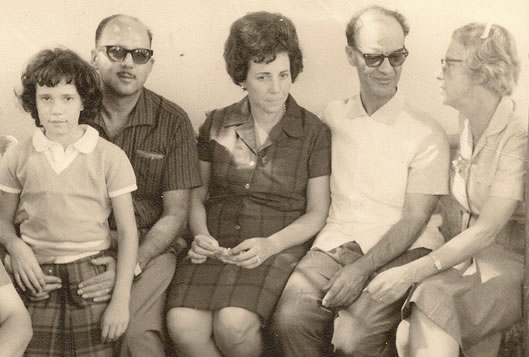
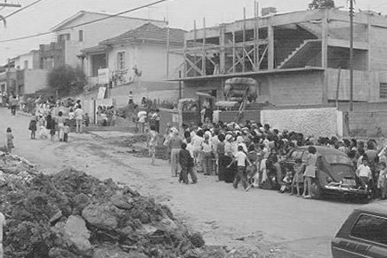
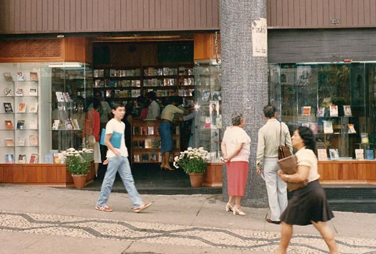

Interessados no trabalho e estudo da Doutrina Espírita, Francisco Galves e Nena, sua esposa, fizeram parte de outros centros espíritas da capital paulista, antes da fundação do Centro Espírita União.
Traziam conhecimento doutrinário e vontade de trabalhar na divulgação do espiritismo e em benefício das criaturas necessitadas, encarnadas e desencarnadas.
O Encontro com Chico Xavier
Conhecendo Chico Xavier, o médium, através dos livros, houve interesse em conhecê-lo pessoalmente. O casal vai então a Uberaba com um grupo de espíritas em visita ao Chico, que manifesta especial atenção a eles como se fossem velhos conhecidos.
Retornando a São Paulo, Galves e Nena comentaram sobre a atenção dedicada a eles. Mais tarde saberiam pelo próprio Chico que Emmanuel lhe houvera dito que no momento oportuno amigos do passado chegariam e que ele logo os reconheceria.
O mesmo não aconteceu com Galves e Nena, que sentiram por ele, porém, uma grande afeição que os uniu fortemente. O casal, assim, assiduamente voltava a Uberaba para visitá-lo, acentuando-se nesses encontros fraternos a alegria nos trabalhos da Doutrina Espírita.

Chico levou Francisco e Nena para conhecerem dona Aparecida Conceição Ferreira, que iniciava em Uberaba seu trabalho social, dando assistência aos doentes do pênfigo, doença na época pouco conhecida e sem locais disponíveis que abrigassem e tratassem seus portadores.
Começou assim o interesse do casal pelo amplo trabalho de assistência fraterna aos mais carentes.
Nesse ínterim, Galves e Nena observavam e questionavam algumas práticas que se desviavam da pureza doutrinária, aprendida nos ensinamentos de Chico Xavier, na vivência do médium e no respeito pela codificação kardequiana.
Galves e Nena, assim como a mensagem recomendava, passaram a realizar o culto no lar, reunindo semanalmente o grupo familiar para oração e diálogos sobre páginas de O evangelho segundo o espiritismo, de Allan Kardec.
Durante este período preparatório de um ambiente propício para formação de uma nova casa espírita, o casal mantinha as visitas a Chico em Uberaba. Dr. Bezerra, então, transmite mais duas mensagens de incentivo e orientação para concretização do novo núcleo espírita, reforçando ainda mais a necessidade das orações no ambiente familiar e do diálogo entre o casal, firmando os ideais que cultivavam no propósito de iniciar um núcleo espírita.
A Fundação na Rua dos Democratas
Em outra visita a Chico, Dr. Bezerra orienta Galves e Nena através de nova mensagem, encorajando-os ao início de um trabalho doutrinário, que não fosse na residência do casal, como já alertado em comunicação anterior.
Nesse ínterim, Francisco Galves e seus irmãos haviam recebido por herança dos avós uma casa no bairro do Jabaquara, à Rua dos Democratas, nº 527, que se encontrava vazia. Ao ser comentada com Chico a possibilidade de se iniciar o trabalho doutrinário neste local, Chico prontamente os incentivou.

Primeiramente, começaram as reuniões semanais de desobsessão, em favor de um parente necessitado do auxílio espiritual. Posteriormente, as reuniões públicas evangélicas, exatamente como orientava Dr. Bezerra de Menezes:
Os trabalhos de desobsessão sempre foram orientados conforme as normas de André Luiz. E, assim, Galves e Nena davam continuidade às tarefas doutrinárias com alegria, empenho, dedicação e muito amor pelo trabalho construtivo que vinham idealizando e realizando.
Na pequena casa no Jabaquara, as atividades doutrinárias vinham sendo realizadas regularmente, conforme as orientações de Dr. Bezerra e o incentivo de Chico Xavier.
Como a casa pertencia à família Galves, herança dos avós, concordaram todos os familiares em fazer uma doação, permitindo desse modo que se concretizasse o ideal de se construir uma casa espírita que acolhesse a todos que ali buscassem apoio espiritual e material.
Inauguração oficial da sede do Centro Espírita União. A escolha do nome também foi sugestão de Dr. Bezerra.
Expansão e Trabalho Social
A cada dia aumentava o número de frequentadores e famílias assistidas pela Casa. Procurando melhor atender àqueles que nela buscavam acolhimento, trabalho e estudo, o Centro Espírita União ampliou suas instalações. Eventos eram promovidos regularmente e companheiros dedicados auxiliavam no projeto e construção de um local mais amplo, melhorando recursos para continuidade do trabalho a serviço do próximo.

As crianças já estavam sendo atendidas no campo educativo. Semanalmente frequentavam as aulas de evangelização como sugeria Dr. Bezerra de Menezes. Famílias carentes recebiam cestas básicas, gestantes participavam do curso de puericultura e recebiam enxovais.
Livraria e Editora
Mantendo-se também na época uma livraria, Chico Xavier incentivou a criação de uma nova editora espírita. Sentindo a motivação de Francisco Galves, o presenteia com um de seus livros psicografados – Amigo, com mensagens de Emmanuel.
Assim nasceu a Editora Cultura Espírita União. O sucesso foi imediato, com edições de títulos como: Livro de Resposta, Pronto Socorro, Caminho e outros.

Com a doação de um imóvel na Avenida Rangel Pestana, 233, o Centro Espírita União inaugurou a Livraria Cultura Espírita União com sede própria, que hoje é também distribuidora.
A renda obtida com a venda dos livros é revertida em benefício das obras assistenciais do Centro Espírita União, atendendo aproximadamente 200 famílias carentes.
Legado e Gratidão
O Centro Espírita União tem procurado honrar o nome que Dr. Bezerra de Menezes sugeriu. Seus trabalhos incentivam o estudo e a fidelidade à codificação da doutrina espírita por Allan Kardec, baseando suas diretrizes na união dos ensinamentos de Jesus e Kardec.
Nossos Agradecimentos
-
A Dr. Bezerra de Menezes
Que guiou nossos primeiros passos e continua transmitindo orientação segura e fé.
-
A Chico Xavier
Que no Plano Terrestre transmitiu confiança, ensinamentos de sabedoria e afeto constante.
-
A todos os nossos colaboradores
Tanto do plano físico quanto espiritual, que compartilham momentos de alegria no trabalho com a Doutrina.
Seja bem-vindo(a)!
Contamos também com você que está chegando agora. Participe conosco desta equipe que encontra no trabalho, no estudo e na alegria de servir ao próximo sua própria alegria de viver.
Conheça Nossas Atividades